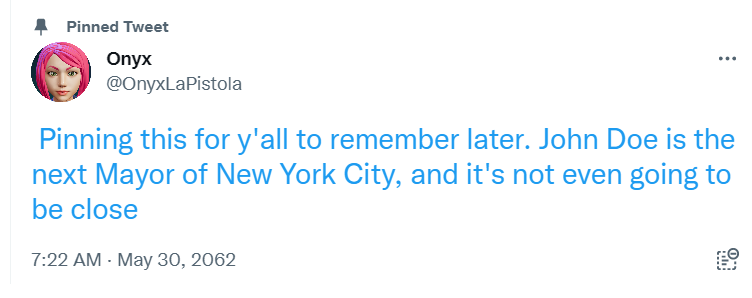

Good evening folks, and welcome to our special election night coverage of the race for Mayor of New York City.
I'm your host, Al Mickelson, and we're coming to you live from the ABC7 studios here in New York.
Until recent polls suggesting a large lead for challenger John Doe, this was expected to be the most highly contested mayoral election in decades. With all the polls now closed, we're finally starting to get a sense of the results that we’ve anticipated for months.
Let's go to our chief political correspondent, Opal Skye, who's on the ground with the latest updates. Opal, what can you tell us?
Well, obviously Al, in all our years covering this city, we’ve never seen an election like this one. The whole world will be watching tonight, to see if Doe's virtual avatar will make a one-of-a-kind acceptance speech.
To that regard, we can now see that the first votes have been counted, down in Staten Island, where Doe owns 72% of the vote with around 40% of Richmond county reporting so far.
Now, I wouldn’t say that this gives us any definitive answers, since the polling done on this race has shown that areas with more developed NanoCore infrastructure are actually more tentative to vote for the candidate supporting a continuation of the rapid expansion of the—
Opal, I’m seeing a lot more results hit the screen up here - can you let us know what these mean?
Oh my. There is no doubt about it at this point. Do you all see that green tinge to Brooklyn on this map?
With almost 59% of the borough reporting, we’re seeing Mayor Hargrave behind in a region she needed to win by at least 10% to have a real shot in this race.
I wouldn’t call it right now, but I would have to say, there’s a 99% chance at this point that YOUR next mayor is John Doe.
WOW. Now, to the numbers nerds, this will not come as a shock, but there are millions around the world who never anticipated that something like this could happen.
.
We’re gonna send you to the next room over, where reporter Ryan Lakeside is currently immersed in John Doe’s virtual rally, alongside some of his biggest supporters.
*Loud yelling obscures the audio
AL, THIS HERE IS ONYX LAVISTA - SHE’S A LONG TIME SUPPORTER OF JOHN DOE, EVEN BEFORE HIS RISE TO NATIONAL FAME DURING THIS MAYORAL RUN.
I TOLD YOU IT WAS GONNA HAPPEN. FIVE MONTHS AGO, NOBODY THOUGHT WE HAD A CHANCE.
The audio seems to be very loud there in the rally, and without a physical microphone, we’re gonna be better off sticking right here in the physical realm of New York.
Assuming the rest of the results come in tonight as expected, we’ll send you right back to Doe as soon has he makes a speech…
While we have a moment here to process the results, let’s get a little input from someone who knows the feelings going through John Doe’s body, somewhere in the physical plane, right now.
Joining the show to discuss the massive implications of this result, former Mayor and longtime friend of the Station, Emily Rodriguez.
Emily, talk to me…